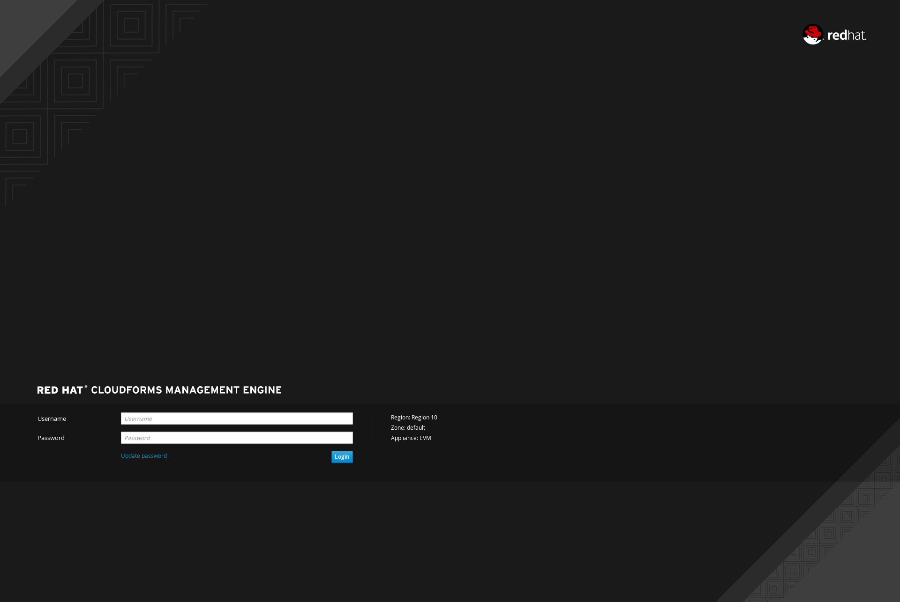
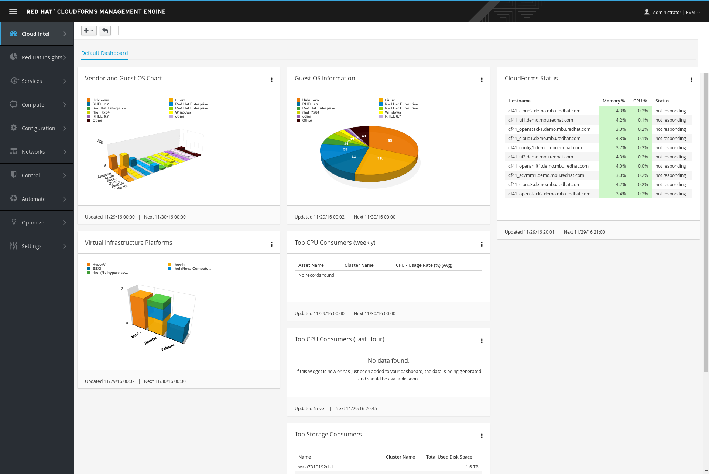

This exercise provides a quick tour of the console to help you get familiar with the user interface, along with some key terminology we will use in subsequent workshop content. If you are already familiar with the basics of CloudForms you can skip this exercise — after making sure you can login.
Key Terms
Before sinking our teeth into Cloud Forms, it is important to understand some terminology. CloudForms enables cloud and infrastructure management.
Infrastructure Providers – A infrastructure provider is a management platform for managing virtual machines from a single type of hypervisor. Infrastructure providers supported by CloudForms are Red Hat Enterprise Virtualization Management (RHEV-M), VMware vCenter and Microsoft System Center Virtual Machine Manager (SCVMM).
Hosts – Hypervisors running on physical hardware providing virtual machines and infrastructure.
Clusters – Provide high availability and load balancing for a group of hosts. Clusters are groupings of compute hosts that share similar resources, such as network and storage.
Virtual Machines – Operating systems running under a hypervisor.
Datastores – Storage locations that contain virtual images and disks.
Cloud Providers – A cloud provider is a computing platform that manages instances and allows building of multi-tenant infrastructure services independent from underlying hypervisors. Cloud providers supported by CloudForms are Amazon EC2, OpenStack, Microsoft Azure, and Google Compute Engine (GCE).
Availability Zones – Logical or physical groupings of cloud resources.
Tenants – Cloud computing provides a common software platform. Tenants share the platform but are completely isolated from one another. They have dedicated data, network and security.
Flavors – Cloud computing offers infrastructure as a service. A flavor describes a specific type of instance and what kind of resources are made available to the instance. All instances are created from a type of flavor.
Security Groups – Tenant based security that defines Ingres and Egress access to instances.
Instances – Virtual Machines running under cloud infrastructure.
Container – Your software wrapped in a complete filesystem containing everything it needs to run.
Image – We are talking about Docker images; read-only and used to create containers.
What you will learn
You will learn how to access CloudForms. CloudForms provides a web console that allow you to perform various tasks via a web browser. Let's get started by logging into this and checking the status of the platform.
Step 1: Navigate to the CloudForms Management Engine web interface.
Navigate to the CloudForms Management Engine interface, using the URL provided by your instructor.
Step 2: Log in
Login with the user/password provided (if there's an icon on the Desktop, just double click that).
Accept any warnings regarding the SSL certificate.
 Login Webpage
Step 3: View the Cloud Intelligence dashboard
Once logged in you should see the Cloud Intelligence dashboard. This customized dashboard shows four (or more) widgets.
 Cloud Intel Dashboard
Step 4: Explore Cloud Intel Dashboard
Explore the data in each of the widgets:
Vendor and Guest OS Chart
Guest OS Information
Virtual Infrastructure Platforms
CloudForms Status
Feel free to zoom in, download, open in a new window, minimize, and then minimize it in the dashboard (you also can remove the data from the dashboard, but do not do this now).
To return to this screen, select Cloud Intel → Dashboard.
Step 5: Experiment with widgets
Lastly, experiment with dragging widgets to tailor the view.